ComponentSystem-组件系统¶
Create-创建组件¶
一个组件由4部分组成，只有tpl是必须的，其他是可选的
- xxx.tpl:定义了模板,每一个组件都必须有tpl
- xxx.css:定义了局部样式,对于没有局部样式的组件则不需要
- xxx.ts:用于对数据进行操作，如果没有数据，或者没有逻辑则不需要
- xxx.widget：定义了一个组件的名称和对应的tpl/css/ts文件路径，如果没有改文件，则会使用默认组件名(默认组件名为全路径，同java)和默认路径下的文件
如何使用一个组件
通过在tpl中直接定义，可直接导入组件
<children-playerarea-playerarea$>{"isOpponent":false,player:{{it1.me}}}</children-playerarea-playerarea$>常用的格式还有以下几种
<role_show$ style=""></role_show$>表示本目录下的role_show组件， <role_show$$ style=""></role_show$$>表示父目录下的role_show组件， <role_show-zb_show$$ style=""></role_show-zb_show$$>表示父目录下role_show目录下的zb_show组件 <app-base-btn style=""></app-base-btn>表示根目录开始，app/base目录下的btn组件
通过调用pi.ui.root模块中popNew函数，弹出新的组件界面
import { popNew } from '../../pi/ui/root'; popNew(foreletName, foreletParams, (ok:string) => { //todo 这里处理触发ok函数时的回调 }, (cancel:string) => { //todo 这里处理触发cancel函数时的回调 });
Style-样式处理¶
wcss
wcss样式文件是我们自定义的用于处理样式的文件，通过定义
w-class="my-money"实现对其引用。其格式与原生css结构一致，因其原理限制，暂不支持伪类( :hover)、伪对象( :first-child)和关键帧动画( animation keyframes)wcss处理原理
我们会将所有的wcss中定义的属性改为内联样式添加到对应dom节点上，但其优先级会略低于直接定义的内联样式。
因其最终表现为内联样式，就有了上述说的某些不支持的情况。
由于引用wcss文件不占有原生引用css文件位置，那么一个dom节点上能同时再引入全局css文件进行处理
样式的优先级(innerstyle>wcss>css–参见css例子)
# tpl文件
<section w-class="blueColor" class="yellowColor" style="color:red;">i am red</section>
# wcss文件
.blueColor {
color:blue;
}
# 全局css文件
.yellowColor {
color:yellow;
}
上述就是一个简单的样式应用
- 局部作用域
- 从子组件向上查找，找到的第一个同名class即为 class
- 同一属性，父wcss > 子wcss
father.wcss
.a{background-color:red;}
.b{font-size:80px;}
father.tpl
略
child.wcss
.a{backgournd-color:blue;font-size:40px;}
child.tpl
<div ~clazz = "a b"> i am blue, and 80px</div>
Data-数据传递¶
- 在模板中只有子组件的props属性才能收到父组件传递过来的值
- 模板中it代表props，it1代表state
- props和state的值都可以在脚本中进行设置，props的值也可以通过父组件传递而得到
- 理论上我们希望props上绑定是需要在tpl上传递的数据，state保存组件自己的数据，如果你非不这么做，其实影响也不大
组件间的数据传递，将孤立的组件串联起来，构成一个整体
子组件=>父组件
- 通过子组件抛出事件，父组件监听事件的形式实现数据传递
父组件=>子组件
- 在创建组件时传入参数
<role_show$ style="">这里可传入参数</role_show$> popNew(foreletName, foreletParams); foreletParams:传递的参数
简单数据传递
含有变量的数据传递
多层数据传递
Event-事件处理¶
自定义事件
自定义事件被广泛应用于组件间的数据传递，直系父子间都能通过自定义的事件来完成
系统事件
- 可直接绑定7种我们支持的系统事件，在事件监听中有具体的定义
- cap—代表传递方式为捕获
- on—代表传递方式为冒泡
Life-生命周期¶
帧调度
widget
什么是widget
负责显示逻辑，是数据和原始dom间的桥梁
widget属性
public name: string = null; // 组件的名称 public tpl: Tpl = null; // 组件的模板 public sheet: {value: Sheet} = null; // 组件的样式 public config: {value: Json} = null; // 所对应的配置 public forelet: Forelet = null; // 所对应的forelet public props: Json = null; // 由父组件设置的组件属性 public state: Json = null; // 由forelet设置的组件状态 public tree: VWNode = null; // 组件所对应的节点树 public parentNode: VirtualWidgetNode = null; // 父节点，parentNode.link的对象就是widget public children: Widget[] = []; // 所有的子组件 public inDomTree: boolean = false; // 是否在dom树中 public resTab: ResTab = null; // 资源表 public resTimeout: number = 3000; // 资源缓冲时间，默认3秒widget生命周期钩子
- create 实例创建后调用，此时数据已经初始化完成
- firstPaint 第一次计算后调用，此时创建了真实的dom，但并没有加入到dom树上
- beforeUpdate 更新到dom树前调用，执行渲染之前
- afterUpdate 更新到dom树后调用，渲染循环中调用
- attach 添加到dom树后调用，渲染循环中调用
- detach 从dom树上移除后调用，渲染循环中调用
- destroy 销毁时调用
widget生命周期图示 
forelet
forelet作用
负责进行业务逻辑处理，是数据库和显示组件间的桥梁
forelet生命周期
Tpl-模板语法¶
注释
- 直接在模板中定义
{{% 我是注释...}}实现添加注释，模板文件中不支持HTML的<!-- 注释 -->这种注释格式，如果存在会无法编译成功，使用{{% 注释···}}这种格式时，需要注意后括号的位置，当对一个可执行语句进行注释时，会匹配到执行语句的后括号，导致编译出错。
- 直接在模板中定义
插值(强调可以在任何地方插值)
- 文本
- css片段
- js表达式
因模板处理原理是对tpl中字符串进行解析处理，通过一定规范，重新转换为新的字符串，并解析为对应的节点树，所以我们可在任意地方进行插值，构建出想要的效果。
常用的插值格式有以下几种
- 调用函数:{{new Date().toString()}}
- 判断赋值:{{(i > 0) ? 1 : 0 }}
- 直接赋值：{{i + 1 }}
- 默认值赋值：{{v || ‘none’ }}
变量定义
直接在模板中定义
{{let x = (date(it.name) +1) * 2}}实现定义变量并赋值，也可以通过定义{{: list[0] = 1}}对数据进行修改内置变量
- it–对应组件中props中的值，也就是父组件传递下来的数据
- it1–对应组件中state中的值，也就是当前界面自己定义的数据
- _cfg–对应组件中配置的额外参数，对应config文件中的配置
我们在模板中，有以上几个内置变量可直接使用。
警告：内置变量中的值不要在模板中修改
- 条件渲染
if条件判断
{{if it.isOK}}
else if条件判断
{{elseif it.size + 1 > x}}
else条件
{{else}}
条件结束
{{end}}
- 列表渲染
- 普通列表渲染
- 通过did进行优化